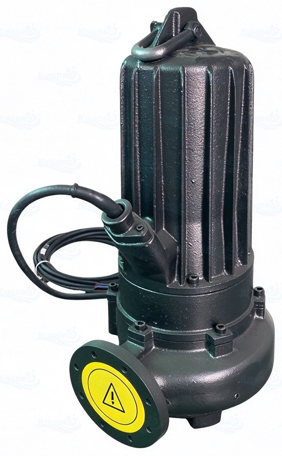
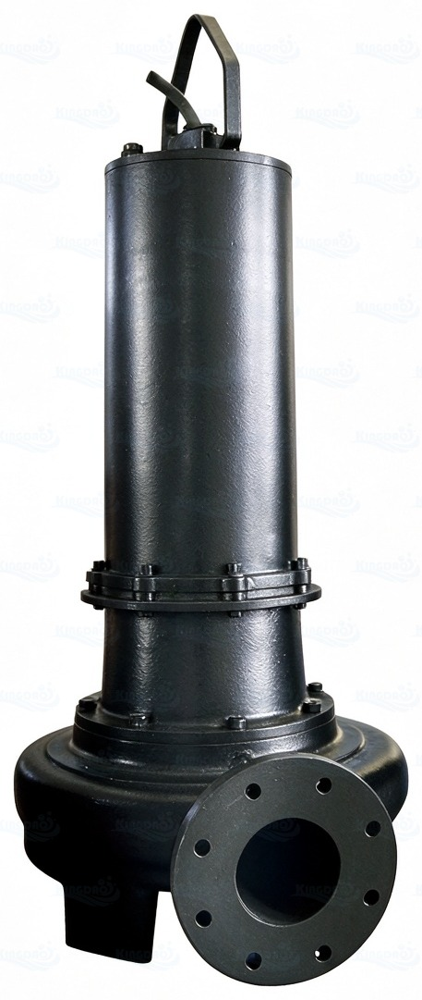
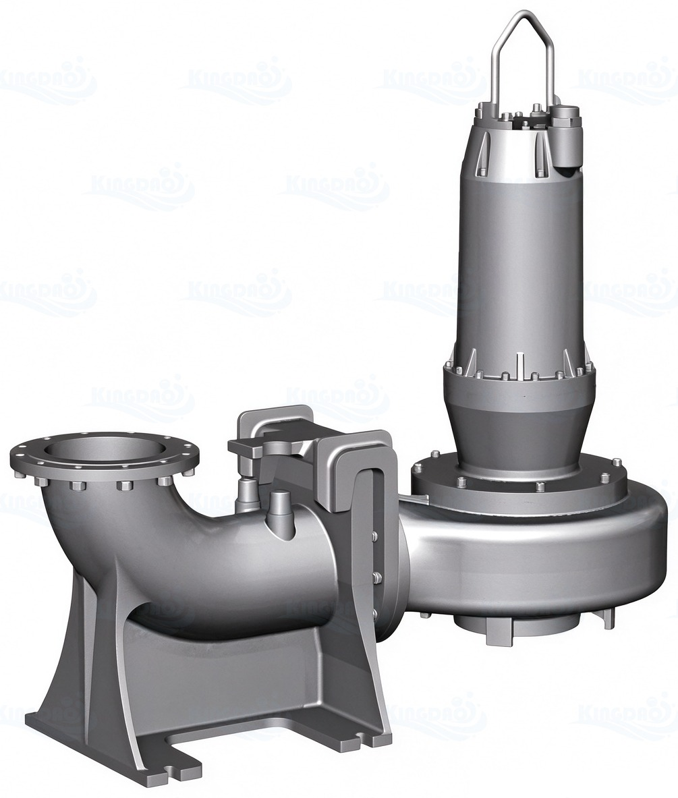

Submersible pumps are the workhorse of a wastewater plant: raw sewage transfer, sludge pumping, sump drainage and recirculation. The selection question is rarely the flow and head alone — it is what the pump has to pass.
For raw sewage the impeller has to pass the solids without blocking; where the flow carries fibrous material, a cutter or grinder arrangement in front of the impeller is what keeps the pump running. For sludge, the viscosity and the solids content set the derating.
Two frames from the same range — the standard vortex pump, and the cutter version for fibrous solids.


Single-stage, close-coupled, with a large free passage through the volute so rags and solids leave with the flow instead of wrapping the impeller.
Submersible sewage pumps — supplied as an authorised distributor of Lanshen (蓝深) pumps.

Vortex impeller. The impeller sits in a recessed volute and turns the flow rather than passing it through narrow channels — a free passage of 25 to 150 mm depending on size, so the pump passes what a channel impeller would choke on.
Mechanical seal and motor. Two mechanical seals in series with an oil chamber between them; the motor is IP68 with class F insulation and thermal protection embedded in the windings.
Installation. Free-standing on a foot with a hose coupling, or on a guide rail auto-coupling base (the GAK column in the tables) so the pump can be lifted out for service without anyone entering the wet well.
What we need to select one. Flow and head at the duty point, the solids the pump has to pass, the wet well depth and the discharge pipe size. Send the duty point and we will confirm the model, the impeller trim and the rail kit.
Duty point is written into the model code: WQ · flow (m³/h) - head (m) - motor (kW). Standard supply 380 V / 50 Hz (60 Hz to order), non-clog vortex impeller.
| Model | Q m³/h | H m | Speed rpm | Eff. % | Motor kW | DN mm | Guide rail kit | Solids Ø mm | Weight kg |
|---|---|---|---|---|---|---|---|---|---|
| WQ10-10-1 | 10 | 10 | 2900 | 44 | 1 | 50 | 50GAK | 25 | 29 |
| WQ15-7-1 | 15 | 7 | 2900 | 47 | 1 | 50 | 50GAK | 25 | 29 |
| WQ10-15-1.5 | 10 | 15 | 2900 | 44 | 1.5 | 50 | 50GAK | 25 | 32 |
| WQ15-10-1.5 | 15 | 10 | 2900 | 47 | 1.5 | 50 | 50GAK | 25 | 32 |
| WQ25-8-1.5 | 25 | 8 | 2900 | 50.6 | 1.5 | 50 | 50GAK | 25 | 32 |
| WQ15-20-2.2 | 15 | 20 | 2900 | 47 | 2.2 | 50 | 50GAK | 25 | 45 |
| WQ25-14-2.2 | 25 | 14 | 2900 | 50.6 | 2.2 | 50 | 50GAK | 25 | 45 |
| WQ40-10-2.2 | 40 | 10 | 2900 | 54 | 2.2 | 50 | 50GAK | 25 | 45 |
| WQ20-22-3 | 20 | 22 | 2900 | 49.2 | 3 | 50 | 50GAK | 25 | 45 |
| WQ30-16-3 | 30 | 16 | 2900 | 52.4 | 3 | 50 | 50GAK | 25 | 45 |
| WQ40-12-3 | 40 | 12 | 2900 | 54 | 3 | 50 | 50GAK | 25 | 45 |
| WQ100-5-3 | 100 | 5 | 2900 | 55 | 3 | 100 | 100GAK | 50 | 45 |
| WQ20-25-4 | 20 | 25 | 2900 | 49.2 | 4 | 80 | 80GAK | 40 | 75 |
| WQ30-18-4 | 30 | 18 | 2900 | 52.4 | 4 | 80 | 80GAK | 40 | 75 |
| WQ40-15-4 | 40 | 15 | 2900 | 54 | 4 | 80 | 80GAK | 40 | 75 |
| WQ60-13-4 | 60 | 13 | 2900 | 57 | 4 | 80 | 80GAK | 40 | 75 |
| WQ160-4-4 | 160 | 4 | 980 | 65 | 4 | 150 | 150GAK | 70 | 100 |
| WQ180-3-4 | 180 | 3 | 980 | 66 | 4 | 150 | 150GAK | 70 | 100 |
| WQ250-2-4 | 250 | 2 | 980 | 60 | 4 | 150 | 150GAK | 70 | 100 |
| WQ25-30-5.5 | 25 | 30 | 1470 | 52 | 5.5 | 50 | 50GAK(A) | 25 | 175 |
| WQ30-21-5.5 | 30 | 21 | 1470 | 52.4 | 5.5 | 100 | 100GAK | 50 | 175 |
| WQ45-18-5.5 | 45 | 18 | 1470 | 55 | 5.5 | 100 | 100GAK | 50 | 175 |
| WQ65-15-5.5 | 65 | 15 | 1470 | 55 | 5.5 | 100 | 100GAK | 50 | 175 |
| WQ70-14-5.5 | 70 | 14 | 1470 | 57.9 | 5.5 | 100 | 100GAK | 50 | 175 |
| WQ100-8-5.5 | 100 | 8 | 1470 | 59.8 | 5.5 | 150 | 150GAK | 70 | 175 |
| WQ200-5-5.5 | 200 | 5 | 1470 | 72 | 5.5 | 200 | 200GAK | 100 | 190 |
| WQ20-40-7.5 | 20 | 40 | 2900 | 54.5 | 7.5 | 80 | 80GAK(A) | 40 | 200 |
| WQ45-30-7.5 | 45 | 30 | 1470 | 52.4 | 7.5 | 100 | 100GAK | 50 | 200 |
| WQ50-27-7.5 | 50 | 27 | 1470 | 55 | 7.5 | 100 | 100GAK | 50 | 200 |
| WQ70-20-7.5 | 70 | 20 | 1470 | 57.9 | 7.5 | 100 | 100GAK | 50 | 200 |
| WQ100-13-7.5 | 100 | 13 | 1470 | 59.8 | 7.5 | 150 | 150GAK | 70 | 200 |
| WQ150-8-7.5 | 150 | 8 | 1470 | 62 | 7.5 | 150 | 150GAK | 70 | 200 |
| WQ210-6-7.5 | 210 | 6 | 1470 | 65 | 7.5 | 200 | 200GAK | 100 | 220 |
| Model | Q m³/h | H m | Speed rpm | Eff. % | Motor kW | DN mm | Guide rail kit | Solids Ø mm | Weight kg |
|---|---|---|---|---|---|---|---|---|---|
| WQ45-32-11 | 45 | 32 | 1470 | 55 | 11 | 100 | 100GAK | 50 | 280 |
| WQ70-22-11 | 70 | 22 | 1470 | 57.8 | 11 | 100 | 100GAK | 50 | 280 |
| WQ100-16-11 | 100 | 16 | 1470 | 59.8 | 11 | 150 | 150GAK | 70 | 280 |
| WQ150-10-11 | 150 | 10 | 1470 | 62 | 11 | 150 | 150GAK | 70 | 280 |
| WQ500-5-11 | 500 | 5 | 1470 | 65 | 11 | 250 | 250GAK | 100 | 300 |
| WQ70-32-15 | 70 | 32 | 1470 | 57.9 | 15 | 100 | 100GAK | 50 | 280 |
| WQ100-22-15 | 100 | 22 | 1470 | 59.8 | 15 | 100 | 100GAK | 50 | 280 |
| WQ150-17-15 | 150 | 17 | 1470 | 62 | 15 | 150 | 150GAK | 70 | 280 |
| WQ250-13-15 | 250 | 13 | 1470 | 65 | 15 | 150 | 150GAK | 70 | 280 |
| WQ550-6-15 | 550 | 6 | 1470 | 72 | 15 | 250 | 250GAK | 100 | 320 |
| WQ80-34-18.5 | 80 | 34 | 1470 | 63.5 | 18.5 | 100 | 100GAK | 50 | 450 |
| WQ100-30-18.5 | 100 | 30 | 1470 | 64.8 | 18.5 | 100 | 100GAK | 50 | 450 |
| WQ150-18-18.5 | 150 | 18 | 1470 | 67 | 18.5 | 150 | 150GAK | 70 | 450 |
| WQ250-15-18.5 | 250 | 15 | 1470 | 67 | 18.5 | 150 | 150GAK | 70 | 450 |
| WQ300-11-18.5 | 300 | 11 | 1470 | 70.5 | 18.5 | 150 | 150GAK | 70 | 450 |
| WQ400-10-18.5 | 400 | 10 | 1470 | 66 | 18.5 | 200 | 200GAK | 100 | 450 |
| WQ800-4.5-18.5 | 800 | 4.5 | 740 | 78 | 18.5 | 300 | 300GAK | 150 | 750 |
| WQ80-38-22 | 80 | 38 | 1470 | 63.5 | 22 | 100 | 100GAK | 50 | 500 |
| WQ100-35-22 | 100 | 35 | 1470 | 64.8 | 22 | 100 | 100GAK | 50 | 500 |
| WQ150-22-22 | 150 | 22 | 1470 | 67 | 22 | 150 | 150GAK | 70 | 500 |
| WQ250-17-22 | 250 | 17 | 1470 | 70 | 22 | 150 | 150GAK | 70 | 500 |
| WQ400-13-22 | 400 | 13 | 1470 | 70.5 | 22 | 200 | 200GAK | 100 | 500 |
| WQ600-7-22 | 600 | 7 | 1470 | 68 | 22 | 250 | 250GAK | 100 | 500 |
| Model | Q m³/h | H m | Speed rpm | Eff. % | Motor kW | DN mm | Guide rail kit | Solids Ø mm | Weight kg |
|---|---|---|---|---|---|---|---|---|---|
| WQ150-30-30 | 150 | 30 | 1470 | 67 | 30 | 150 | 150GAK | 70 | 800 |
| WQ250-22-30 | 250 | 22 | 980 | 70 | 30 | 150 | 150GAK | 70 | 800 |
| WQ300-18-30 | 300 | 18 | 980 | 70.5 | 30 | 150 | 150GAK | 70 | 800 |
| WQ400-16-30 | 400 | 16 | 1470 | 67 | 30 | 250 | 250GAK | 100 | 800 |
| WQ600-12-30 | 600 | 12 | 1470 | 75 | 30 | 250 | 250GAK | 100 | 800 |
| WQ800-7-30 | 800 | 7 | 980 | 70 | 30 | 250 | 250GAK | 100 | 800 |
| WQ1100-6-30 | 1100 | 6 | 980 | 70 | 30 | 300 | 300GAK | 150 | 800 |
| WQ150-35-37 | 150 | 35 | 1470 | 67 | 37 | 150 | 150GAK | 70 | 800 |
| WQ250-26-37 | 250 | 26 | 1470 | 70 | 37 | 150 | 150GAK | 70 | 800 |
| WQ300-22-37 | 300 | 22 | 1470 | 70.5 | 37 | 150 | 150GAK | 70 | 800 |
| WQ400-20-37 | 400 | 20 | 1470 | 77 | 37 | 200 | 200GAK | 70 | 800 |
| WQ600-15-37 | 600 | 15 | 1470 | 75 | 37 | 250 | 250GAK | 100 | 800 |
| WQ800-12-37 | 800 | 12 | 1470 | 75 | 37 | 250 | 250GAK | 100 | 800 |
| WQ1200-7-37 | 1200 | 7 | 980 | 69 | 37 | 300 | 300GAK | 150 | 800 |
| WQ250-30-45 | 250 | 30 | 1470 | 70 | 45 | 150 | 150GAK | 70 | 800 |
| WQ300-27-45 | 300 | 27 | 1470 | 70.5 | 45 | 150 | 150GAK | 70 | 800 |
| WQ400-26-45 | 400 | 26 | 1470 | 77 | 45 | 200 | 200GAK | 70 | 800 |
| WQ500-22-45 | 500 | 22 | 1470 | 77 | 45 | 200 | 200GAK | 70 | 800 |
| WQ600-20-45 | 600 | 20 | 1470 | 80 | 45 | 250 | 250GAK | 100 | 800 |
| WQ800-16-45 | 800 | 16 | 1470 | 79 | 45 | 250 | 250GAK | 100 | 800 |
| WQ1000-9.5-45 | 1000 | 9.5 | 1470 | 76 | 45 | 300 | 300GAK | 150 | 800 |
| WQ1800-5-45 | 1800 | 5 | 1470 | 74 | 45 | 400 | 400GAK | 125 | 1500 |
| WQ250-40-55 | 250 | 40 | 1470 | 70 | 55 | 150 | 150GAK | 70 | 1200 |
| WQ300-36-55 | 300 | 36 | 1470 | 70.5 | 55 | 150 | 150GAK | 70 | 1200 |
| WQ600-24-55 | 600 | 24 | 1470 | 74 | 55 | 250 | 250GAK | 100 | 1250 |
| WQ800-20-55 | 800 | 20 | 1470 | 79 | 55 | 250 | 250GAK | 100 | 1250 |
| WQ1000-13-55 | 1000 | 13 | 980 | 76 | 55 | 300 | 300GAK | 150 | 1500 |
| WQ1300-10-55 | 1300 | 10 | 980 | 77.5 | 55 | 300 | 300GAK | 150 | 1500 |
| WQ1700-8-55 | 1700 | 8 | 980 | 75 | 55 | 400 | 400GAK | 125 | 1500 |
| WQ400-30-75 | 400 | 30 | 1470 | 63.5 | 75 | 300 | 300GAK | 150 | 1550 |
| WQ600-26-75 | 600 | 26 | 1470 | 69 | 75 | 300 | 300GAK | 150 | 1550 |
| WQ950-20-75 | 950 | 20 | 1470 | 72 | 75 | 300 | 300GAK | 150 | 1550 |
| WQ1000-16-75 | 1000 | 16 | 1470 | 76 | 75 | 300 | 300GAK | 150 | 1550 |
| WQ1300-12-75 | 1300 | 12 | 980 | 77.5 | 75 | 300 | 300GAK | 150 | 1550 |
| WQ1600-10-75 | 1600 | 10 | 980 | 72 | 75 | 400 | 400GAK | 125 | 1550 |
| WQ2000-8-75 | 2000 | 8 | 740 | 79 | 75 | 400 | 400GAK | 125 | 2300 |
| WQ2700-7-75 | 2700 | 7 | 740 | 74 | 75 | 500 | 500GAK | 125 | 2500 |
Reading the model code. WQ · flow (m³/h) - head (m) - motor (kW). Example: WQ400-16-30 = 400 m³/h at 16 m, 30 kW. Every model is available with a guide rail auto-coupling kit (the GAK column) so the pump can be lifted out on its own rails without draining the wet well.
This equipment is built to the process requirement rather than offered as a fixed catalogue of standard models — because the wrong tank volume, plate size or membrane area cannot be corrected later on site.
Flow rate, the medium and its concentration, the installation arrangement, the discharge standard, and the supply voltage and frequency.
A model selection with the dimensioned GA drawing, material specification, utility consumption and the price against that specific duty.
A published table invites selection by flow alone — which is how undersized equipment gets installed. We would rather size it with you once.
15–35 days from drawing approval, depending on the line and the material. Confirm with us before quoting your client.
Sewage transfer · sludge pumping · sumps and storm tanks · recirculation
Flow, the medium, the installation and the discharge requirement — that is enough to select and quote.